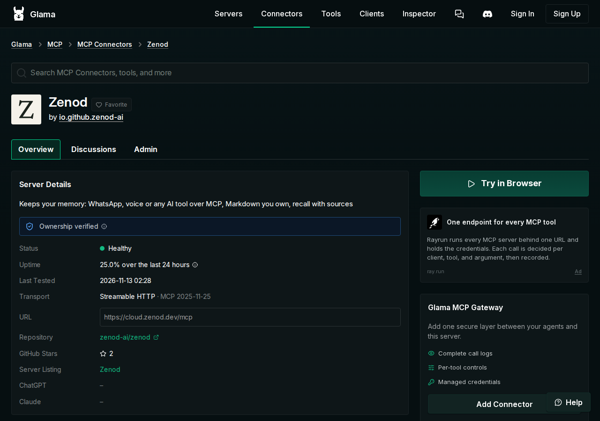
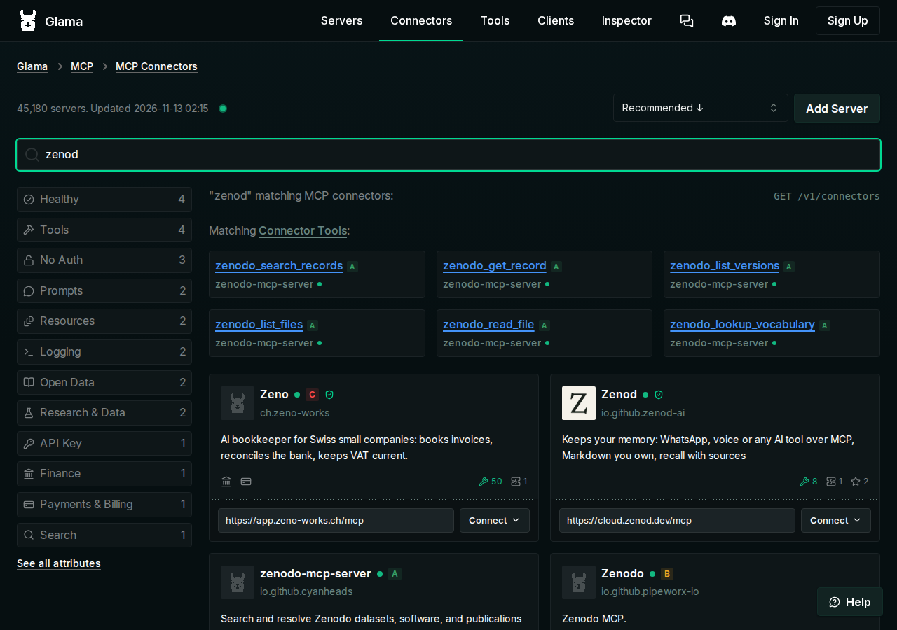
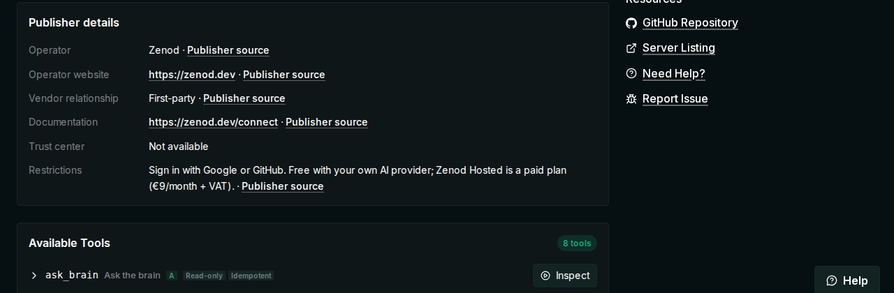
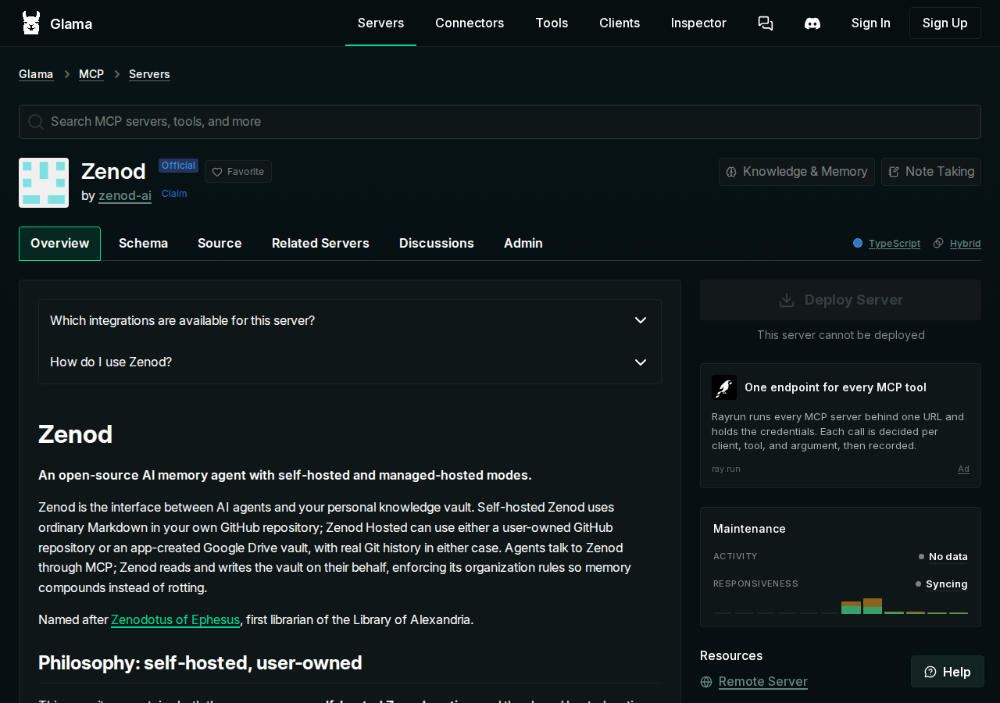

E10-S2 · 2026-11-13
Glama: old page gone, new Zenod listing live
The old Glama page with the backwards address now sends people to the new Zenod listing, which shows up in Glama search as Healthy with the Z logo and zenod.dev.
- Old page, backwards address
- 301 redirect
- New listing Zenod, Healthy
- Found by search zenod
What we checked
| Check | Result | |
|---|---|---|
| Old Glama page with the backwards address | Gone. It sends every visitor to the new Zenod page with a permanent 301 redirect. Its other addresses answer 404, and a search for the old namespace finds nothing. | ✓ |
| New listing in Glama search for "zenod" | Zenod, by io.github.zenod-ai, with the Z logo, Healthy, 8 tools | ✓ |
| Website on the listing | Operator Zenod, website https://zenod.dev, guide zenod.dev/connect | ✓ |
| Repo page on Glama links to it | glama.ai/mcp/servers/zenod-ai/zenod shows "Server Listing: Zenod" and links to the new page | ✓ |
1. The old address now opens the new page
We opened the old Glama address, the one with zenod.dev written backwards, in a browser that was not signed in. It landed on glama.ai/mcp/connectors/io.github.zenod-ai/zenod, which shows Ownership verified and Healthy.

2. Glama search for "zenod" shows the new listing

3. Publisher details on the listing

4. The repo page on Glama links to the new listing

What the team did to get it Healthy
When Glama first created the new listing, nobody had claimed it and it showed Unhealthy, because it had no test login. At 02:26 UTC on 13 November we claimed it with a DNS record on cloud.zenod.dev, the same method as the old listing. We then gave Glama a new key that can only list tools, made on the team's test account. Glama reported Healthy at 02:28. We also added the Z logo and the publisher details again. The old key was revoked because the page that used it no longer exists.
Glama has not yet replied to our support request about the old page, but the old page already redirects, so no further message was sent.
E10-S2 keeps this page · one shared page shell (E75-S5)